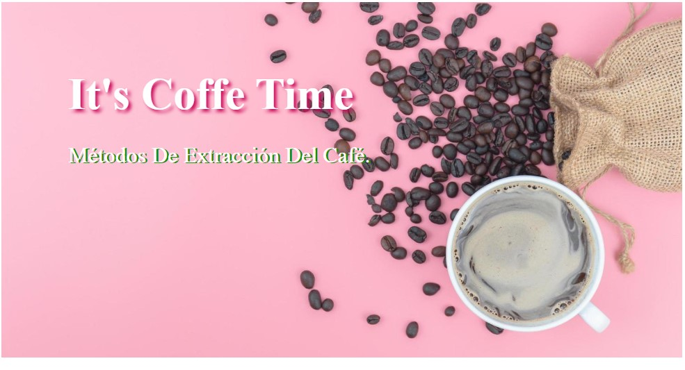
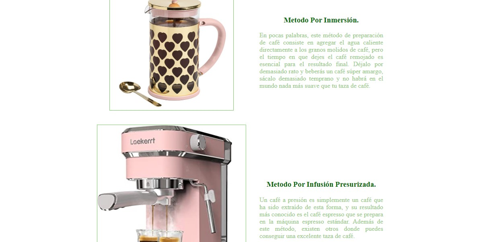

Mis proyectos



Proyecto: Landing page.
En este proyecto se realiza un landing page utilizando lo aprendido de CSS.
Conoce mi página web Accede al repositorioProyecto: Iguana Page
En este proyecto se realiza una maqueta de "iguana page" con finalidad de aplicar lo aprendido en posicionamiento
Conoce mi página web Accede al repositorio